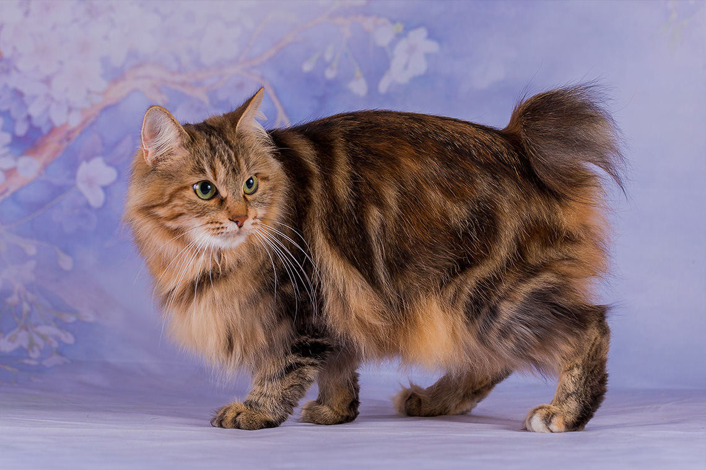

Как подготовить кошку к поездке в гостиницу

Полезные статьи о кошках и новости отеля
Рассказываем, как снизить стресс у питомца и что взять с собой в первую поездку. Список необходимых вещей и советы по адаптации.
Разбираем плюсы и минусы разных типов питания. Советы ветеринаров по составлению рациона для здорового питомца.
Какие игрушки действительно нравятся кошкам, а какие пылятся в углу. Обзор самых популярных развлечений.
Первые признаки недомогания у кошек. На что обратить внимание и когда срочно к ветеринару.
Теперь ваши питомцы могут отдыхать с ещё большим комфортом. Площадь номеров увеличена, добавлены новые игрушки.
Эффективные способы приучить кошку к когтеточке и сохранить вашу мебель в целости.
На что обратить внимание при выборе переноски: размер, материал, вентиляция. Советы для автопутешествий.
Только в марте специальное предложение для новых клиентов. Привезите питомца и получите скидку.
Подпишитесь на нашу рассылку и получайте полезные статьи о кошках, новости отеля и специальные предложения
Нажимая на кнопку, вы соглашаетесь с политикой конфиденциальности